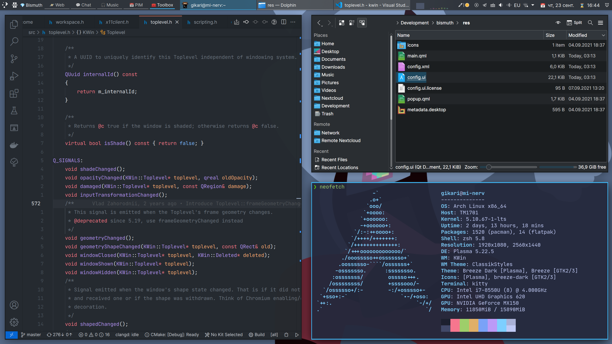
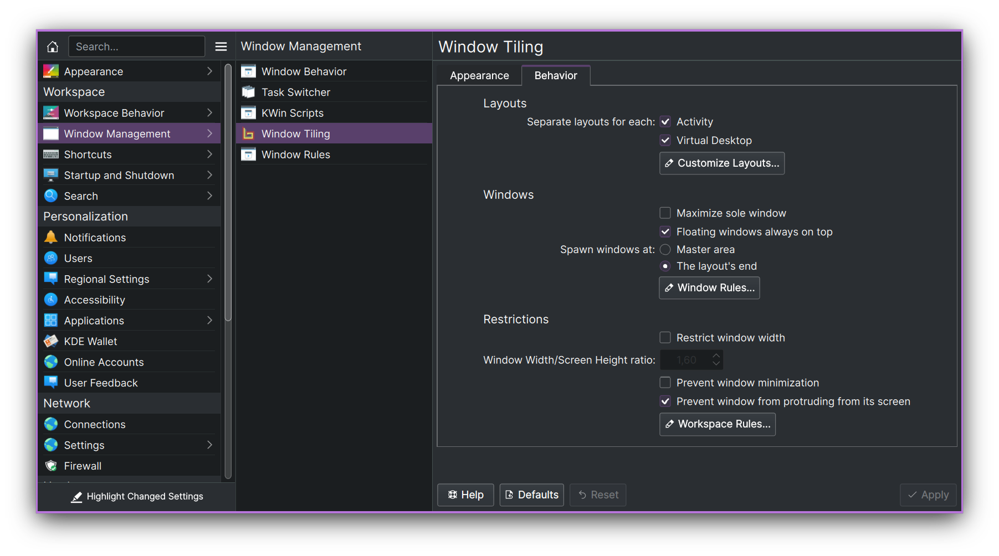

🌈 Bismuth 🌈
Making tiling window management easy. On KDE Plasma.

Arrange your windows in different grids to minimize the mouse usage.
🌟 Features 🌟
Automatic window tiling
Save your time by automatically managing windows on your screen.
Plasma integration
Power-up your workflow using native Plasma features - Virtual Desktops and Activities.
Multiple Layouts
Use different layouts in different contexts.
🏁 Getting Started
Requirements
- A Linux distribution with KDE Plasma version 5.20 or higher
- Qt version 5.15 or higher
- KDE Frameworks version 5.78 or higher
You can check if your system matches these requirements by going to System Settings > About this System.
Installation
:warning: Distributions' packages are not affiliated with Bismuth developers. If you encounter any issues with the incorrect installation, you should contact the package maintainer first.
Arch Linux
Debian
Ubuntu
-
sudo apt install kwin-bismuth
Fedora
-
sudo dnf install bismuth
OpenSUSE Tumbleweed
Gentoo
Solus
From Source
If you know a packaging solution for a distribution, that is not in the list, please open a pull request.
Usage
🎉 To start using Bismuth enable it in System Settings > Window Management > Window Tiling. Additionally, you can decorate your windows in a tiling window manager style (border-only windows) using the window decoration, that comes with Bismuth. To do so, go to System Settings > Appearance > Window Decorations and select the Bismuth decoration.
⌨️ You can view the shortcuts in System Settings > Shortcuts > Window Tiling. If you used Krohnkite before, you can import some of its shortcuts using the bash script.
🔧 If you want, you may also make a couple of manual fixes and tweaks to improve your experience with window tiling. See Tweaks section.
Configuration
You can configure Bismuth in the System Settings > Window Management > Window Tiling.

🤝 Acknowledgments
This project was made possible because of the hard work of other people on Krohnkite KWin Tiling Script.